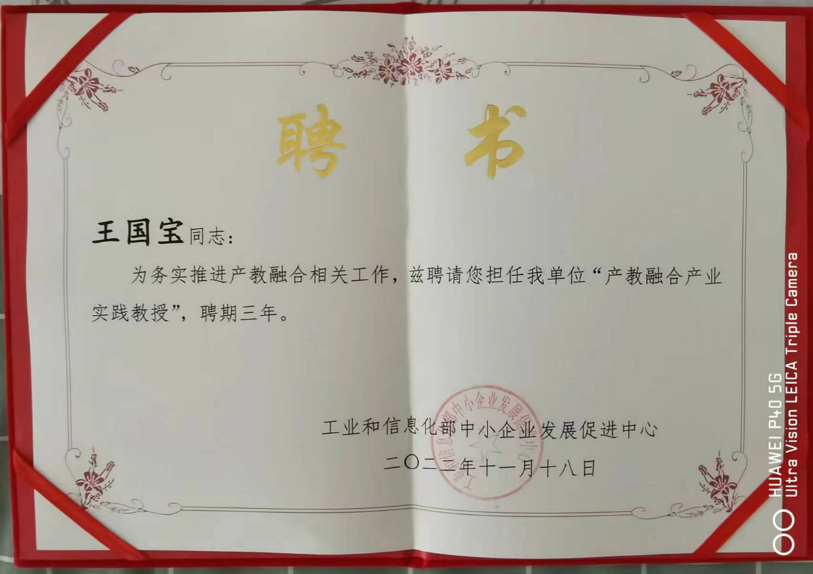
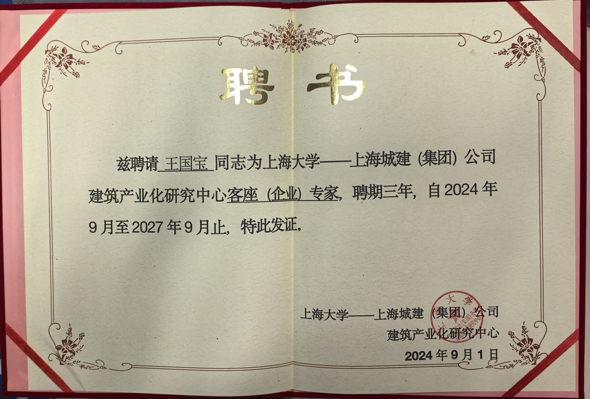

技术从来不缺，缺的是让组织接住技术的方法。6个原创方法论，28个专题系列，30个智能体Skill，服务企业老板、CIO、高管。
麦肯锡2023年全球调研显示，仅10%的企业AI转型项目达到预期ROI。失败的核心不是技术能力，而是方法论的缺失。
不知道自己站在哪，就盲目启动转型，投入大量资源后发现方向完全错误。
72% 企业无基线评估"AI很重要"是共识，但"AI能解决什么业务问题"缺乏高管层面的统一语言。
战略共识率不足30%规划停留在PPT，无法转化为具体的项目、预算、时间表和责任人。
65% 规划无执行路径合规要求、组织阻力、部门利益冲突、否决权陷阱被系统性低估。
政治风险盲区无论你用哪个方法论，最终目标都是帮你和企业建立这三种能力。
当所有人都急着找答案，你先停下来问：我们到底在解决什么？客户到底是什么？订单的本质是什么？
"A problem well stated is a problem half solved." —— 杜威
把模糊的焦虑变成清晰的路径——把复杂问题拆解成可执行的框架，让每一步都知道为什么。
"如果一小时解决问题，先花55分钟思考问题本身。" —— 爱因斯坦
在多种可能性中做出选择——不只是选对，还要知道什么不该做。高效地做不该做的事，比不做更糟。
"Nothing is so useless as doing efficiently what should not be done." —— 德鲁克
每一个方法论都是从实战中磨出来的，不是想出来的。
从认知到执行的渐进式路径——诊（Readiness）、定（StratNav）、绘（Blueprint）、执（WarRoom）。四阶段循环飞轮，让90%不再失败。
告别"项目思维"，拥抱"攀登思维"。五层能力阶梯（C数字底座→L业务场景→I组织能力→M管理价值→B企业成长）+ 双飞轮驱动（规划B→M→I→L→C，反馈C→L→I→M→B），让数字化投资真正产生增长回报。
三重挤压下的制造业十字路口：数据通了但语义没通。四层十二维框架用"本体论"统一业务方言——战略层（业务本体/价值逻辑/竞争壁垒）、运营层（资产智能体/流程语义化/决策协同）、组织层（人才新物种/文化新基因/治理新机制）、数字化层（数据语义化/架构解耦/治理资产化），让AI真正懂你的世界。
连接层解耦→运营层智能→业务层重构→生态层涌现。四层动力模型驱动制造业从"机械控制"跃迁至"生物进化"范式，不是升级而是重构。
数据丰富却调不出洞察，项目成功却无法复制——"数字繁荣下的知识贫困"。三才四象框架：地才·筑基（结构化）→人才·贯通（网络化）→天才·化境（自增强），四象支撑（技术/流程/人才/文化），让知识从静态归档变成动态生命体。
战略和执行之间缺一个导航仪。六维AI冲击评估（战略/组织/流程/IT/文化/ROI）+ 四大去化原则（去中介化/去中心化/去经验化/去边界化）+ 三种诊断模式（快扫15min/标准1hr/深度半天），已产品化为Sloth-ChangeCompass-Eido智能体。
一边写书沉淀方法论，一边跟踪全球前沿研究——免费下载。
按方法论展开的内容矩阵，每篇都是实战经验的提炼。
6个原创框架，从认知到执行的完整体系
以上方法论已产品化为面向企业中高层的培训课程
每套方法论都在课程中有对应的诊断工具和实操环节
方法论的产品化——30个能执行诊断、设计、输出报告的专业AI工具
每一个智能体Skill都是对应方法论的数字化产品。不是聊天机器人，而是能执行专业诊断、方案设计、输出报告的智能工具。覆盖战略规划、营销增长、制造运营、组织变革、内容工具5大业务领域。
30个智能体Skill中，有多个已在企业培训课程中作为演示和赠送工具使用
课程学员可带走2-4个可独立运行的Skill工具，回去用自己的数据跑诊断
12本AI实战书籍 · 免费下载 · 持续更新
全球顶级AI研究报告 · 原文下载 · 中文翻译 · 深度解读
不是教AI技术，是帮企业中高层建立AI时代的判断框架和落地能力
回答「AI转型到底是转什么？跟我有什么关系？」——用行业洞察三层法+变革罗盘诊断，帮决策层一次看清自己的位置。
🎯 适合：老板、CEO、VP、业务线负责人
回答「我们的问题在哪？先做什么后做什么？」——用4A架构逐层诊断企业现状，输出可落地的变革路线图。
🎯 适合：CIO、转型负责人、部门总监、业务骨干
回答「具体怎么做？工具怎么选？流程怎么改？」——带着一条真实业务流来，带着改造后方案走。
🎯 适合：执行团队（IT+业务骨干+变革推动者）
💡 选课建议：老板+高管选认知课（半天看清方向）→ CIO+总监选诊断工作坊（1天找到差距）→ 执行团队选实战营（2天拿到方案）。也可组合：老板听半天+团队跟两天，上下对齐。
6个原创方法论驱动课程内容——每个方法论对应一个诊断/设计工具，学员课堂上当场就用。
每层课程都有明确交付物：诊断报告、变革路线图、AI化业务流程。课堂结束方案就出来了。
五本电子书+配套Skill工具免费赠送。培训前预习，培训后还能用自己的数据跑诊断。
不是让你学会用AI工具——是帮你建立知道「该不该用、用在哪、怎么用」的判断力
课程按企业需求定制，可选单层或三层组合
先做企业AI就绪度诊断，再选最匹配的课程层
28年的跨度，6种方法论的沉淀
先后服务于中石化、霍尼韦尔、毕博（中国）管理咨询公司、德勤管理咨询公司，在能源、制造、管理咨询、战略咨询等重资产行业亲历完整的多轮数字化转型周期。
这些年最大的感悟：技术从来不缺，缺的是让组织接住技术的方法。
所以我做的事很简单——把28年经验蒸馏为可复用的方法论，帮企业和个人建立定义问题、梳理问题、做出判断这三种AI时代最需要的能力。
不是给你一套通用方案，是帮你建立属于自己的判断框架。
每一段经历都是一种能力的源头
能源 · 数字化转型起点
理解"系统上线"和"真正用起来"之间的鸿沟。→ 定义问题的能力
制造 · 自动化
从甲方到乙方的视角转换，看到企业面对技术变革的共同困境。→ 梳理问题的能力
管理咨询
从乙方视角理解企业的管理咨询需求，建立系统化的方法论框架。→ 做出判断的能力（上）
战略咨询
在战略咨询的深度历练中，完成从执行到判断的跨越。→ 做出判断的能力（下）
专注企业智能落地
把28年经验蒸馏为方法论和智能体Skill，通过公众号持续输出，提供培训与咨询。→ 三种能力的整合输出
产业实践与学术教育的双重信任

工业和信息化部中小企业发展促进中心
产教融合产业实践教授
湖南大学工商管理学院
专业学位硕士研究生行业产业导师

上海大学—上海城建集团
建筑产业化研究中心客座专家
已出版 12 本 AI 实战书籍，免费下载
12篇全球顶级AI研究报告 · 原文下载 · 中文翻译 · 深度解读
400+篇深度原创，按方法论展开的内容矩阵